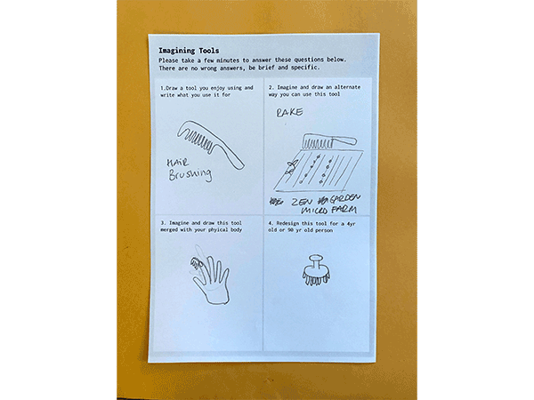
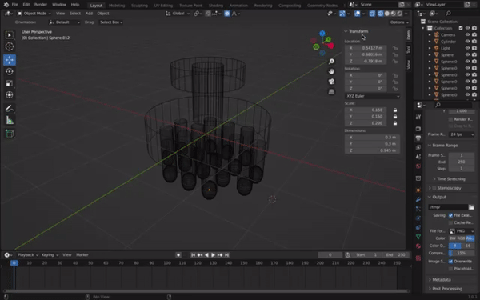
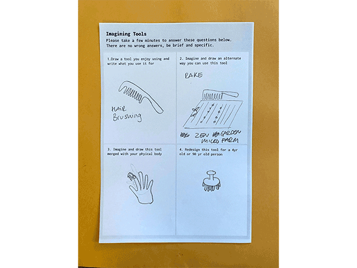
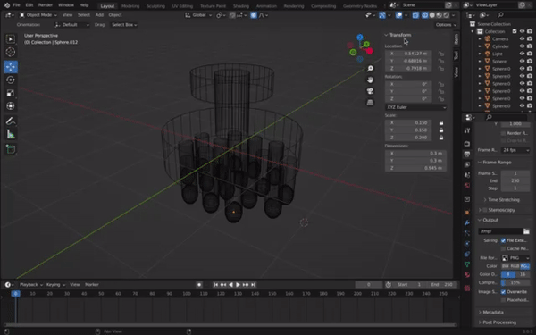

🗓 Week 2 / 2 February 2022
I look forward to learning some 3D modeling skills because it's one that I'm lacking. I have used SketchUp in the pasat to create exhibtions and layout graphics, but it wasn't at the level of accuracy or fabrication drawings for production. It would be a great to be able to create 3D models that can then be transtlated into printing or cutting machines, and physicalized in the real world.
Assignment:
I wanted to create a 3D model of one of the drawings from my 'Imagining Tools' intervention during the Design Dialogues (term 1). This is an imaginary object that was inspired by a hairbrush. I created the model of a drawing the participant made for a 4yrold or 90yr old.


Computer Aided Design
This week was n introduction into computer aided design. We started with the basics of pixels vs vector, colors, and file formats, which I already have a good understanding of with my background in graphic design. Then we moved into 3D design, and learned about different platforms and modes of 3D modeling including parametric design and freeform modeling. We dived deep into the origins and values of Blender as a community and software, and looked into the ways we can use blender for future projects. Following the basic navigation tools through Blender, I could see there was a lot to learn and many possibilities within this software. I just wish we had some more hours in the week to have time to learn and experiment with new software properly.I look forward to learning some 3D modeling skills because it's one that I'm lacking. I have used SketchUp in the pasat to create exhibtions and layout graphics, but it wasn't at the level of accuracy or fabrication drawings for production. It would be a great to be able to create 3D models that can then be transtlated into printing or cutting machines, and physicalized in the real world.
Assignment:
I wanted to create a 3D model of one of the drawings from my 'Imagining Tools' intervention during the Design Dialogues (term 1). This is an imaginary object that was inspired by a hairbrush. I created the model of a drawing the participant made for a 4yrold or 90yr old.

